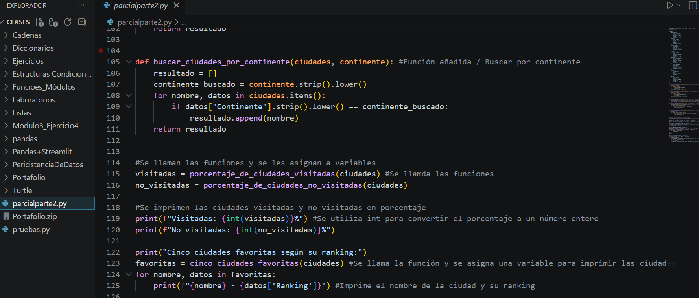
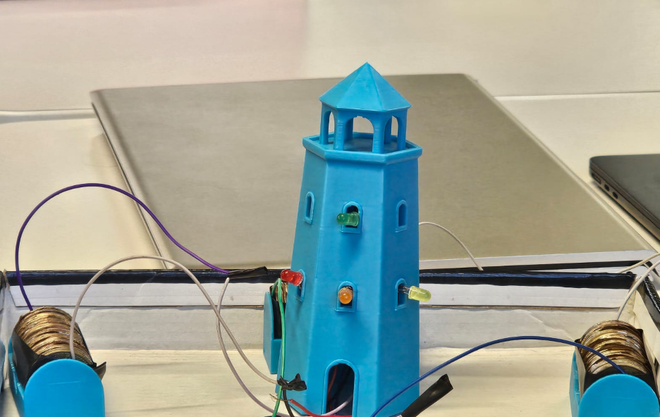
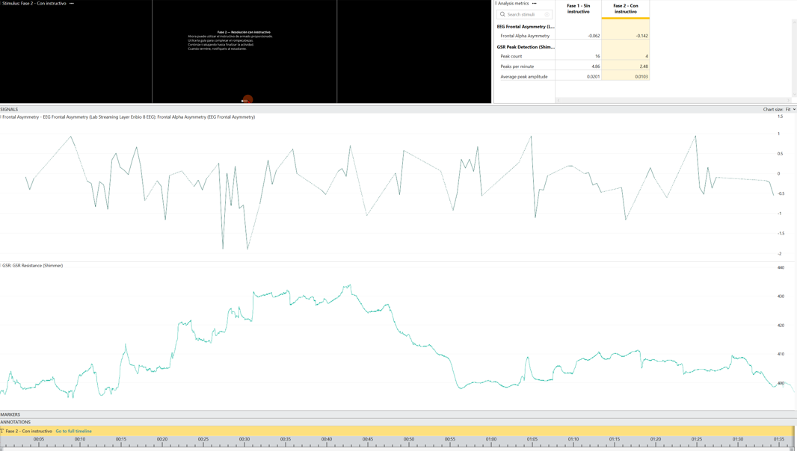

David
Maximiliano
Pablo Cuy
Estudiante de Ing. en Ciencias de la Computación
Universidad del Valle de Guatemala
Quién soy & qué me mueve
// Perfil personal
Me llamo David Maximiliano Pablo Cuy, soy originario de la ciudad del paisaje "Sololá", Guatemala. Actualmente estudio Ingeniería en Ciencias de la Computación y Tecnología de la Información en la Universidad del Valle de Guatemala.
Llegué a esta carrera sin un plan rígido, guiado por una intuición fuerte. Con el tiempo han despertado en mí el interés de aprender y centrarme en dos áreas: la Ciberseguridad y la Inteligencia Artificial.
// Intereses y hobbies
Fuera de la universidad me mantengo activo en:
Desde que practico speedcubing presiento un aumento en mi retención de memoria, además que me ayuda a analizar sistemas algorítmicos. El atletismo y el gimnasio me brindan salud física, con la lectura siempre aprendo temas nuevos, y el senderismo me da perspectiva.
// Áreas de interés
* Nivel actual de interés / exposición, no de dominio.
// Por qué Computación
No hubo un momento eureka ni nada. Desde pequeño sabía quería estar aquí, y con eso me bastó para empezar. Con el tiempo fui entendiendo por qué: la ciberseguridad me engancha porque al final es resolver problemas reales que tienen consecuencias reales. Y la IA me llama la atención porque está cambiando todo lo que creíamos posible.
Me veo como una persona reservada, pero apasionado y con hambre de aprender.
Meses de adaptación
Lo que he construido



Ciencia de la Computación
// ¿Qué es la ciencia de la computación?
Más que escribir código, la ciencia de la computación es la disciplina de estructurar el pensamiento para resolver problemas complejos. Su núcleo no está en los lenguajes de programación ni en las herramientas, sino en la agilidad para diseñar algoritmos eficientes usando razonamiento lógico y matemático. Un científico de la computación no solo programa: analiza, modela, abstrae y encuentra la solución más elegante a un problema que puede tener mil caminos posibles.
// ¿Qué hace un científico de la computación?
Trabaja en la frontera entre la teoría y la aplicación. Puede diseñar sistemas que detectan fraudes en milisegundos, construir modelos que aprenden de los datos, o encontrar vulnerabilidades antes de que alguien más lo haga. Lo que define al trabajo es la capacidad de traducir un problema real en un problema computacional y resolverlo con precisión.
En unos años me veo como especialista en seguridad informática o en inteligencia artificial, trabajando junto a otros profesionales en busca de un futuro más seguro en el mundo digital. No me atrae un rol pasivo; quiero estar donde las decisiones tienen peso real, donde un error cuesta caro y una buena solución importa.
Qué me llevo de este primer ciclo
Reflexión del ciclo
// ¿Qué salió bien?
Logré cumplir mi objetivo de horas beca. Al principio lo veía como algo casi imposible por la cantidad comprometida, pero haberlo completado me da una confianza distinta. También salió bien el contacto con las personas: me costó al principio, pero terminé construyendo relaciones que importan.
// ¿Qué no salió tan bien?
La procrastinación fue mi mayor obstáculo. Arrastré la mala costumbre de dejar tareas a última hora desde el colegio, y aquí el costo fue mayor. No es solo una cuestión de notas, es una cuestión de hábito y de respeto hacia mi propio tiempo.
// ¿Qué has aprendido?
Aprendí que las amistades importan mucho más de lo que creía en un entorno universitario. Y que responsabilidad no es una palabra vacía: es la diferencia entre un semestre que se siente fuera de control y uno en el que tú decides el ritmo.
// ¿Qué te deja con dudas?
Me queda la pregunta de qué hubiera pasado si mi proceso de adaptación hubiese sido más rápido. ¿Habrían mejorado mis notas? ¿Habría construido más relaciones? No es arrepentimiento, sino una pregunta que me sirve de combustible para el siguiente ciclo.
El primer semestre fue un espejo. Me mostró mis límites, pero también confirmó que estoy en el lugar correcto. La carrera me engancha, las personas me motivan y los retos me recuerdan por qué empecé. El segundo ciclo empieza desde un lugar más consciente.